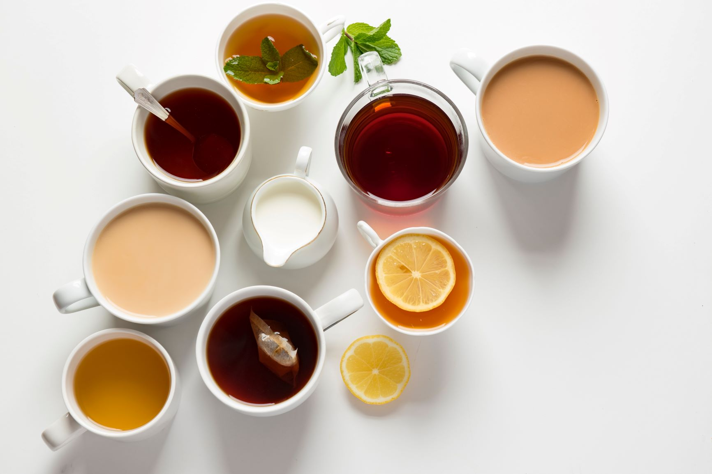

- Origins
- Processing
- Types
- Preparing
Types

Black tea is grown and processed all over the world in varying geographies and climates. Three of the largest producers of black tea today are India, Sri Lanka and Africa. In fact, half of the world’s tea production comes from India. Some of the most popular styles of black tea coming out of these top-producing countries include:
ASSAM : India’s Assam region is the largest tea-growing region in the world. The rainy, tropical climate produces a tea known for its bold and malty characteristics that stand up well to milk and sugar.
DARJEELING : Grown in a smaller, mountainous tea-producing region of India, Darjeeling is a softer, more herbaceous black tea that can change season to season with the climate. Darjeeling is often used as the tea base for India’s popular spiced beverage, Chai.
CEYLON : Much of Sri Lanka’s economy depends on its more than half a million acres of tea gardens that range in location from cool and mountainous to humid and tropical. Most of Sri Lanka’s tea export is black tea, known as Ceylon. Ceylon teas can vary depending on where they grow, but they are generally known to be strong and brisk with a hint of spice. (Sri Lanka is also known for its cinnamon production.)
KENYAN : Being a latecomer to tea production (early 1900s), Kenya learned fast and now leads Africa and the industry in the CTC style of tea production, producing and exporting mostly black tea. Kenyan tea is known for its assertive, full-bodied style.
While not a top-producing tea region of the world, the Tetulia region of Northern Bangladesh is home to (and namesake of) Teatulia®’s own USDA-certified organic tea garden. At nearly 2,000 acres, we’re proud that our tea garden is one of the largest of its kind in the world. We cultivate the Camellia sinensis assamica tea plant variety using natural farming methods that don’t harm the environment. And we use the orthodox method to process our black tea, so the fully oxidized leaf stays whole and brews into and fresh, sweet liquor with notes of apricot and honey. To learn more about Teatulia’s black tea, visit our black tea product page.